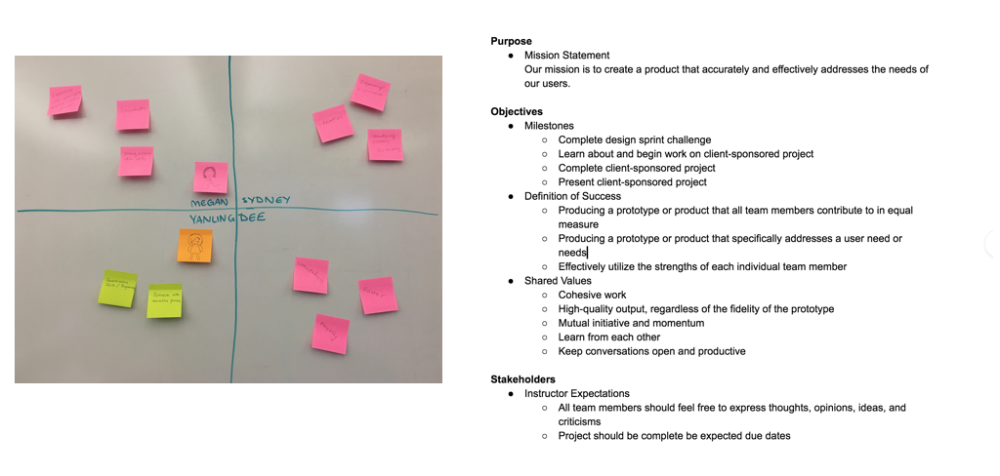
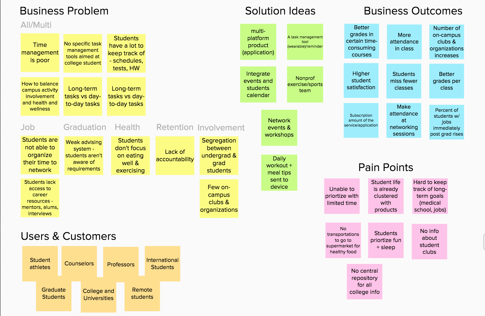
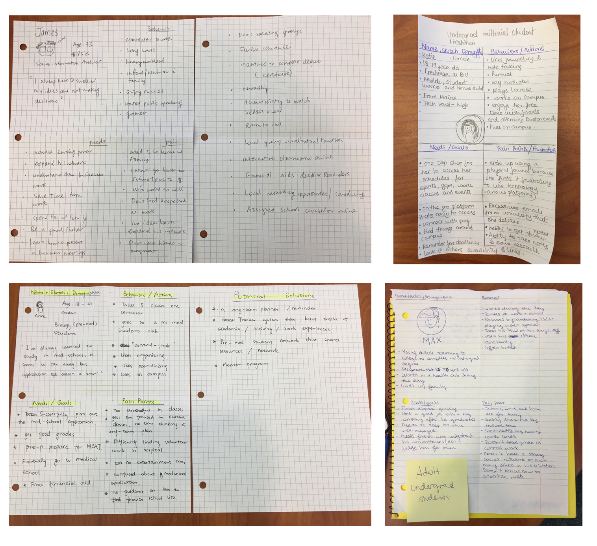
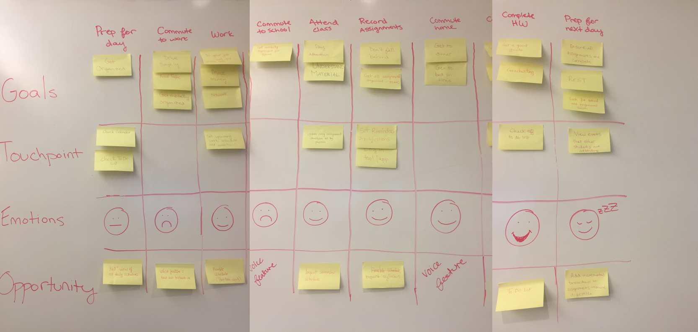
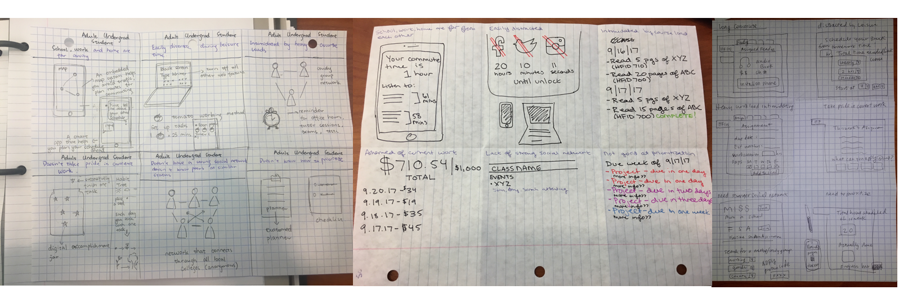
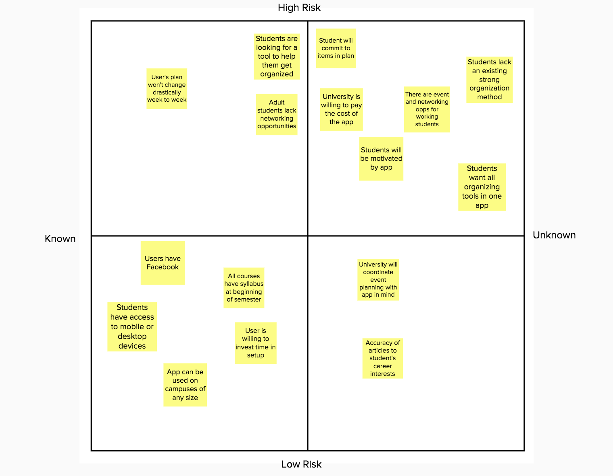
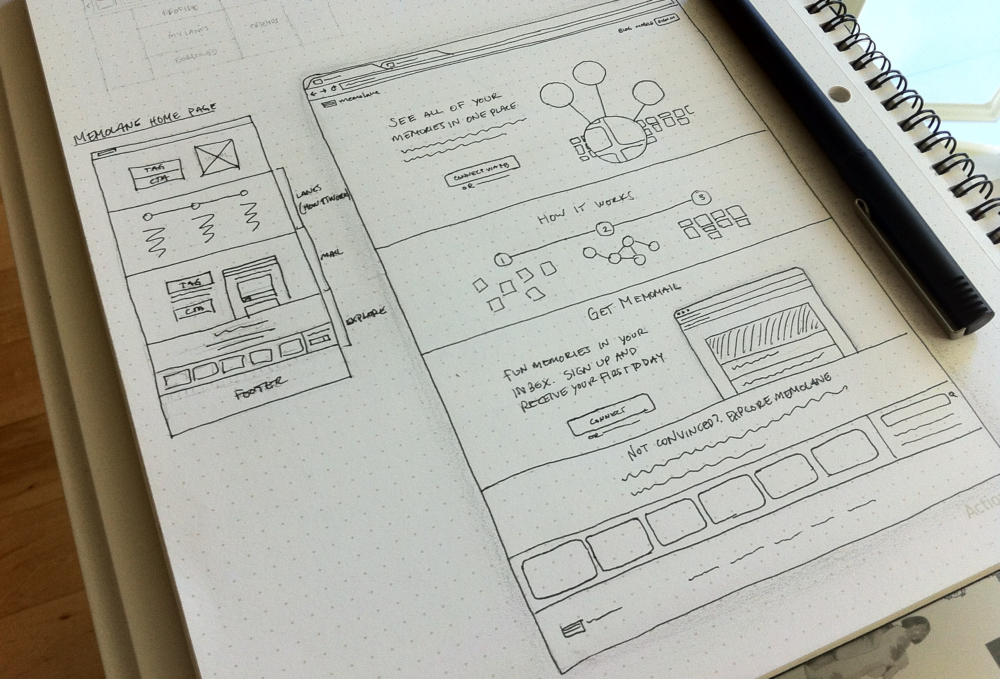

My Role
I teamed up with three classmates designing a minimal viable product - ManageMe as a solution for a design challenge within a 4-day design sprint. The team focused on applying lean UX principles and agile concepts in the process, exploring problem space, discovering user needs, and creating useful solutions. During the design sprint, I led efforts in coordinating stand-up meetings, generating retrospectives, organizing brainstorm sessions and creating wireframes. I was also involved in the whole design sprint process and presented in the product pitch.
Design Challenge
Design a simple, fun and innovative task management solution for college students.
Universities are looking for ways to improve things like (1)student retention, (2)student involvement, (3)graduation rates, (4)job replacement rates, and (5)student health and wellness. Students are interested in easily and effectively managing their college experience so that they can maximize their well being and success.
Solution Overview
ManageMe is a cloud-based platform solution that aims to help students integrate multiple aspects of their life. ManageMe helps students arrange time and plan for everything from chores, homework, commutes, to social events, while keeping academic and professional goals on track. ManageMe is designed to be purchased by colleges and universities as a yearly subscription product and service provided to enrolled students.
ManageMe is a holistic task management tool tailored to college students. It is designed to be robust and be able to provide curated task management services that are customed to individuals. Specifically, five main features are included in the Minimum Viable Product:
A 4-Day Design Sprint Process
Day 1 - Understand (65 mins)
On day 1 of the design sprint, the team first met together. Before diving into the project right away, the team spent 25 mins introducing each one and discussing our strengths and potential roles in the team. The team together created a strength board and a team charter as the base of the project. The process helped us get familiar with each other and warm up before working together on the project.
Team Strengths and Team Charter
After the team warm-up exercise, we started exploring the problem space by filling out a Lean UX Canvas to better understand the problem. We started with silently generating ideas and thoughts and mapping them to the Lean UX Canvas. By the time each category had at least 5 post-its, we started our discussion and iteration on the content of the Canvas. During the process, we had a major question regarding the definition of “Business Problem” given the problem space provided, we wanted to know if “Business Problem” are essentially user problems. Since in this problem specifically, customers that pay for the product are not necessarily users that directly interact with the product. However, this was still an early stage of the project, we decided not to restrict ourselves in exploring problem space, instead, we each put in 3-4 problems we came up with and sorted them out into several categories. We were then able to identify users/customers, come up with potential business solutions and finalized the rest of the canvas.
Lean UX Canvas
Day 2 - Diverge and Converge (100 mins)
On Day 2 of the design sprint, our main task was to create proto-personas. The purpose of creating proto-personas was to eventually narrow down the problem scope and identify the main users for our potential product. Each team member first created a persona, we then went through each persona and its needs and pain points and voted out the primary persona. By this point, the team would have a relatively solid understanding of the users and the problem.
Proto-personas created by the team
After the discussion and voting, we finalized our proto-persona to be Max - an adult undergraduate student who returns to college to finish a degree and works part time during the day.

Primary Proto-Persona
Day 3 - Ideation (180 mins)
Day 3 of the design sprint entered into the ideation stage. In order to better understand how a user could interact with our potential product and how user could solve problems, we created a user journey map trying to identify opportunities for our product.
Primary Persona Journey Mapping
By reviewing the persona journey map, we found out that there are several key points where our persona could feel frustrated and could not finish the goals. These included: not having an overview of all-day activities, nothing to do in long commute driving to school/work, always rush to finish large assignments or finish at last minute. After identifying the potential breakpoints from the persona journey map, we first worked individually to generate 6 low-fidelity visual representations, then took turns to present and dot voted and picked several most promissing solutions.
Sketches of Proposed Solutions
After presenting, and dot voting, we narrowed down our key features to the following:
As we came up with key features to be included in our Minimal Viable Product, we wanted to map out our risky assumptions and be able to test our solutions and assumptions through the MVP.
Mapping Assumptions Against Proposed Solutions
Based on desirable business outcomes, we generated a list of assumptions based on our observations of student behaviors and activities. Based on the assumptions we then generated a list of hypothese about user needs and mapped out our solutions to their needs. As seen in the risky assumptions map, we needed to create viable tests and indicators for the assumptions we made and the solutions we came up with.
Day 4 - Prototype (200 mins)
On day 4 of the design sprint, the main task for the team was to quickly prototype a MVP (minimal viable product) for testing assumptions purpose. When deciding how we want to present the MVP, we found out that certain key features we came up with can be hard to be integrated inton one single product. The team also focused on determining how to effectively present key features of the MVP and be able to generate objective testing results.
After carefully discussing and evaluating, we decided to create the MVP in the form of a landing page with key features included. We provided a signup list in the landing page and planned to generate the number of "interested" users to see how actual users feel about our solutions. As a parallel test, we also conducted competitive analysis on our MVP against a calendar tool and an organizational tool to generate further insights.
Sketch Idea of the MVP
We prototyped the MVP with Axure and Balsamiq Mockup to showcase the key solutions within the limited time availability. To summarize, the value proposition we wanted to convey was to build a holistic task management tool for adult college students, making it easy for them to integrate different aspects of life.
Reflections
What went well
All team members were engaged in every phase of the design sprint process and made contributions towards the end result. At the diverge phase, we were able to generate a good amount of ideas and solutions to work with, and at the converge phase, we provided constructive feedback and worked together to improve solutions. Overall, the team addressed and tackled problems quickly, avoiding ambiguities at each phase of the process.
How we can improve going forward
We could apply more ideation techniques to broaden the ideas for potential solutions. We spent relatively less time in prototyping, and in the future, we should try to apply different prototyping techniques to the product with different fidelities that goes beyond MVP.